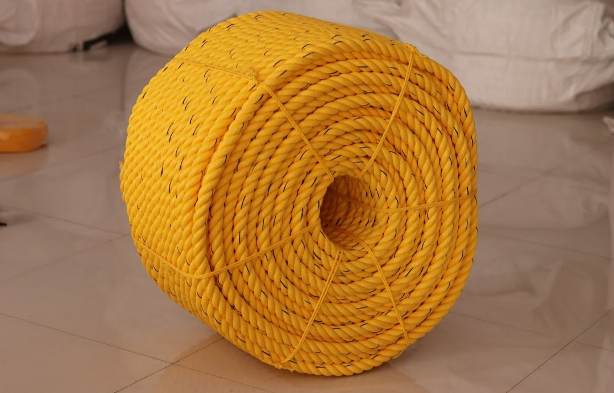
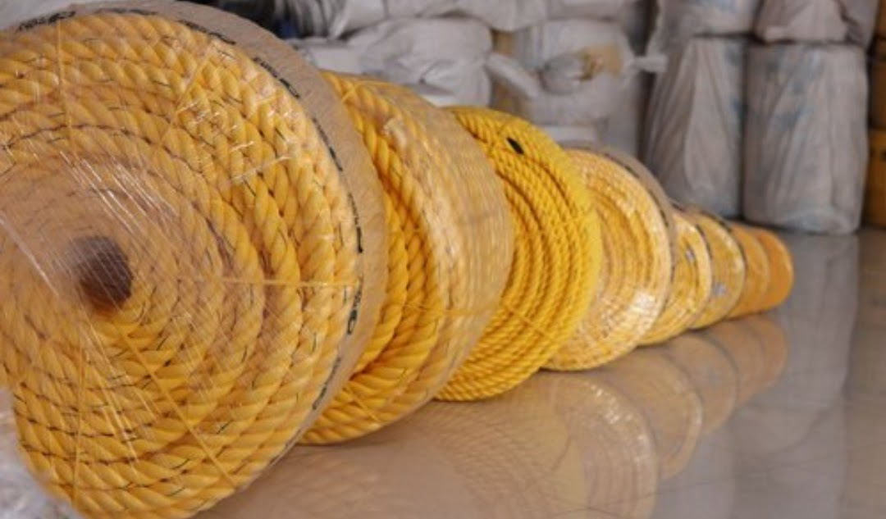
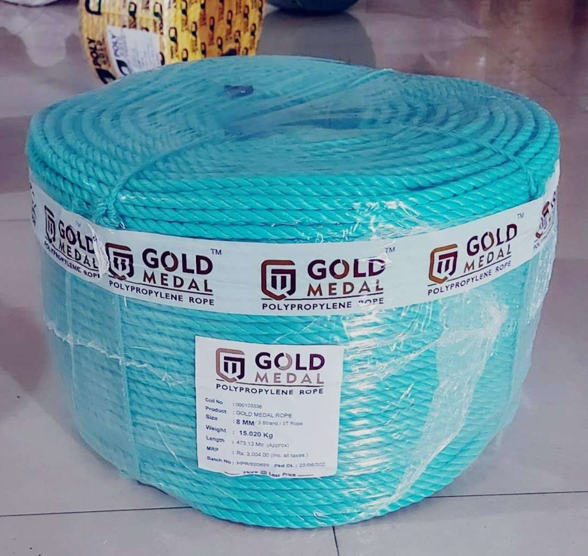
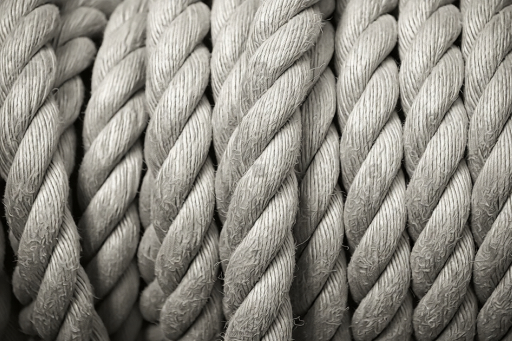
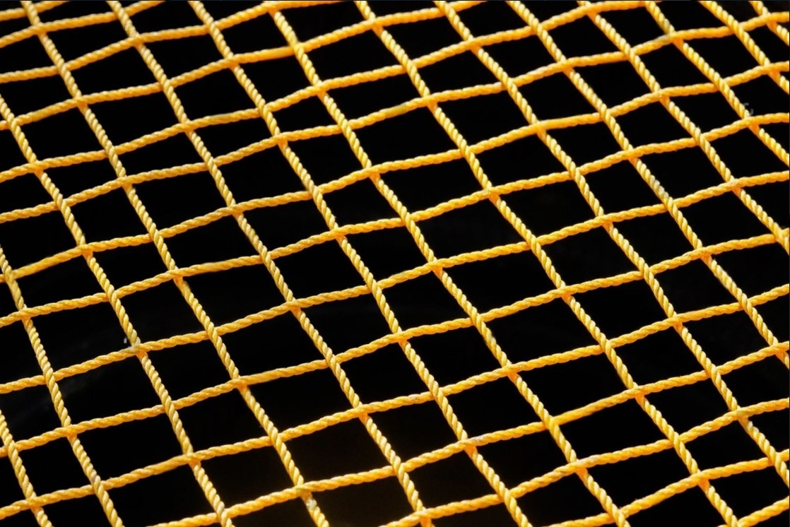
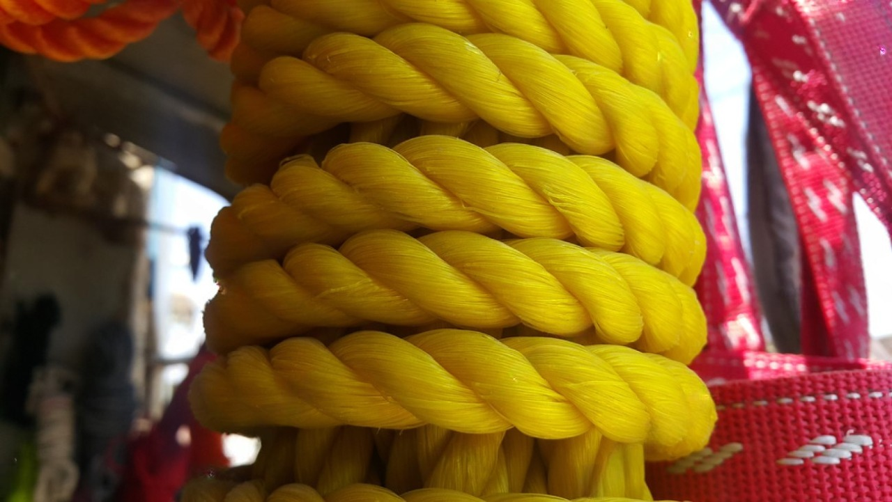

Strong and lightweight polypropylene ropes manufactured in traditional 3-strand construction for reliable tying, bundling, and securing applications.







3 Strand PP Ropes are widely used for industrial and commercial tying applications due to their excellent strength-to-weight ratio and resistance to moisture.
Manufactured from high-quality polypropylene granules, these ropes are easy to handle, economical, and suitable for both indoor and outdoor usage.
For Indian operating conditions, rope diameter should be selected based on load and handling frequency. Thicker diameters are recommended for transport and repeated tying, while smaller sizes are suitable for light-duty bundling and packaging applications.